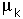

Work, Energy and Friction
Frictional resistance between two objects which are at rest with respect to one another is called static friction, but if they have relative motion it is called kinetic friction.

Generally speaking, if you push on a block at rest, it will resist with a force which exactly counters your applied force up until a point where you overcome the friction and the block starts to move. Then when the block starts to move, it usually takes less force to keep the block in motion at a constant speed. The maximum force at the point at which the block starts to move, and the force required to keep in constant velocity motion are characterized by static and kinetic coefficients of friction. These coefficients are just the applied forces under those two conditions divided by the force pressing the surfaces together.
1. Place the wooden track horizontally on the table, attach a string and weight hanger as indicated. Placing a wooden block at some point near the end of the board , find out how much mass must be added to start the block in motion from rest. Then find the mass of the block and the coefficient of static friction. Note: in all your measurements of the amount of hanging mass, be sure to include the mass of the hanger, which is typically 50 grams.

Note that ms is a ratio of forces which are determined by the weights of the blocks, but since the masses are also proportional to the weights, the coefficient of friction is
2. Using the same setup, give the block a slight push on each trial and find out how much hanging mass is required to maintain the block in motion at a constant velocity. You will have to make a judgment by watching the motion to find the proper hanging mass so that, once bumped into motion, the block moves without speeding up or slowing down.
| mass added ________________________ |
| coefficient |  | = ____________________ |
3. You now have some experience with how much mass it takes to put the block in motion. Choose a convenient mass significantly above that threshold mass, like the nearest 100 grams above the amount required to put it in motion. Place the block on the wooden track at about the same starting point and suspend the hanging mass at a height so that it can hit the floor and such that the wooden block will move and stop without hitting the pulley. Practice a bit until you have an experimental setup which works.
| Hanging mass ________________ | Height of mass _______________ |
| Time to floor ________________ | Distance block moved _______________ |
Before you released the hanging mass, it had potential energy equal to its weight (mg) times its height from the floor. Evaluate that initial potential energy by converting the mass to kilograms, using 9.8 m/s2 for g, and multiplying times the initial height in meters.
|
Initial potential energy PE = mgh = ____________ joules. Evaluate the final kinetic energy of the hanging mass, KE = 0.5 mv2 just before it hits the floor Distance = ________ meters, time = ___________ s, average velocity = __________m/s Final velocity __________ m/s, |
|
How does your measured kinetic energy compare with the original potential energy? Does this make sense in light of the conservation of energy principle? Why is the KE less than the PE?
Now examine the amount of work done on the block. If the block moves and then stops on the horizontal surface, then its initial and final kinetic energies are zero. That means that the work done on it by the falling mass was counteracted by friction so that all the energy supplied to the block is dissipated by friction. The work done against friction is equal to the difference between the potential and kinetic energies you measured above.
Work against friction = force of friction x distance = m mblock g dblock
Setting the work done by friction against the motion equal to the work done on the block by the falling mass allows you to get another evaluation of the coefficient of friction m since you now know all the other parameters in the above equation.
Work done on block by falling mass = ______________ joules.
Coefficient of friction = ______________.
Is this coefficient of friction closer to your static or kinetic friction coefficients from above? Which of the ways to determine the coefficient of friction would you consider to be most reliable and why?
| Example data and calculation. |
Friction puzzle: hold a meter stick horizontal, supported by one finger under each end. Move your fingers slowly toward each other. Describe the motion of the meter stick -- does it slide smoothly over both fingers? Describe its motion. Record your thoughts about why it moves that way.
Equipment: Friction, Work and Energy
| Wooden track with pulley | block | meter stick |
| mass hanger | scale | set of assorted masses |
Apparatus movie